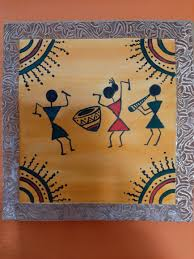
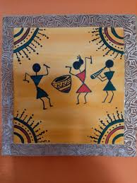

Welcome To Art Studio
 Welcome – you’re in the perfect place for all your art and craft inspiration. We want to help you
express your personality, have more fun and learn through creativity. With stacks of new ideas,
hints and tips, blogs, tutorials, news and free events, we’re everything art and craft!
The importance of art and craft for students extends far beyond the classroom. These creative
endeavours contribute to a well-rounded education by fostering creativity. It enhances cognitive
development, and promoting personal growth.
They equip students with valuable life skills such as patience, perseverance, and time management,
while also nurturing their self-esteem and individuality. Furthermore, arts and crafts prepare
students for future career opportunities in a transforming world. We must recognize and support the
role of art and craft in education, ensuring that students can develop into well-rounded, creative,
and confident individuals.
Welcome – you’re in the perfect place for all your art and craft inspiration. We want to help you
express your personality, have more fun and learn through creativity. With stacks of new ideas,
hints and tips, blogs, tutorials, news and free events, we’re everything art and craft!
The importance of art and craft for students extends far beyond the classroom. These creative
endeavours contribute to a well-rounded education by fostering creativity. It enhances cognitive
development, and promoting personal growth.
They equip students with valuable life skills such as patience, perseverance, and time management,
while also nurturing their self-esteem and individuality. Furthermore, arts and crafts prepare
students for future career opportunities in a transforming world. We must recognize and support the
role of art and craft in education, ensuring that students can develop into well-rounded, creative,
and confident individuals.
Services
 

Painters have used canvas to express their creativity for generations. It is still the preferred painting surface for novices and professionals alike. This is particularly for acrylic painting. Canvas is a flexible painting surface that is available in a wide range of shapes, sizes, and forms to fit any requirement or budget. It has a wide range that may be used for everything from little paintings to big, sprawling compositions.However, the two primary reasons why canvas is such a popular painting surface are how amazing it feels beneath the brush and how long it lasts.Canvas is also lighter and easier to move than the formerly used wood surfaces.
Warli painting is of tribal art mostly created by the tribal people from the North Sahyadri Range in Maharashtra, India. This range encompasses cities such as Dahanu, Talasari, Jawhar, Palghar, Mokhada, and Vikramgad of Palghar district. This tribal art was originated in Maharashtra, where it is still practiced today. Warli painting is of tribal art mostly created by the tribal people from the North Sahyadri Range in Maharashtra, India. This range encompasses cities such as Dahanu, Talasari, Jawhar, Palghar, Mokhada, and Vikramgad of Palghar district. This tribal art was originated in Maharashtra, where it is still practiced today.
In the ancient Sanskrit language of Hinduism and Buddhism, mandala means “circle.” Traditionally, a mandala is a geometric design or pattern that represents the cosmos or deities in various heavenly worlds. “It’s all about finding peace in the symmetry of the design and of the universe,” says artist Saudamini Madra.Artist and math professor Fernanda Bonafini began making mandalas just for the joy of it. “In the process of drawing mandala artwork, you feel much calmer and more peaceful and your breathing and heartbeat slow down. The sensation in your mind and body and their connection, is very good,” Bonafini says.
Doodling refers to drawing, sketching, or scribbling idly, while a person's attention is otherwise occupied. They are basic sketches that may have concrete relevance for representation or can be abstract shapes. Typically, these hand-drawn forms are a product of anger, exhaustion, and stress. Some individuals become restless during a meeting, and they dislike doing nothing, and they start doodling to ease their boredom. It may seem very disrespectful to start doodling at a meeting, but as per scientific research, doodling while listening to someone feeding you data can help you better recall the details. The doodle art form also helps you with many other things like;